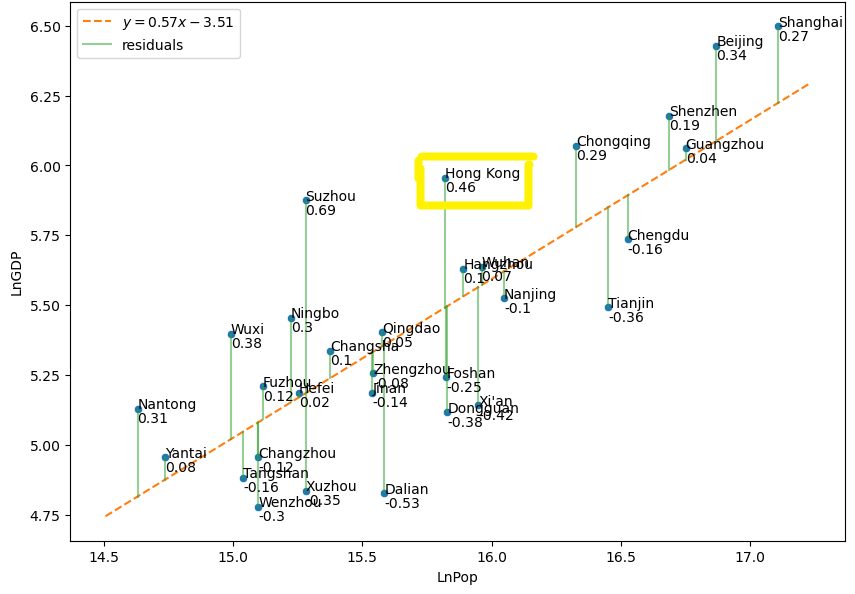

15.5. Solution to Exercises#
15.5.1. Section 2#
2.1 A puzzle with only 1 or 2 types of pieces will be less complex than a jigsaw puzzle where each piece is unique. For complex problems in human society, a major challenge is how to limit the characteristics of constituent parts so the entire population is subdivided into major types whose analysis gives a good picture of the state of the system as a whole. (Such a strategy is also used within statistical physics in the form of the re-normalization group approach [Bertin 2021].)
2.2.1 Rebuilding may be impossible within an isolated rural community. In a major metropolitan area such as Mekelle, the regional capital, distance learning facilitated by international money transfer can turn an isolated learning system into a closed system (transfer of ‘energy’ in the form of credit and knowledge but not physical resources).
The post-war rural Embasneyti school district became an open system in August 2023 when it received a ‘mass transfer’ of 80 blackboards, 6000 notebooks, pens and pencils, 3 laptops and 16 soccer balls. This enabled the relaunch of school for 6,000 children in the district, and was a story covered by regional TV media (https://www.facebook.com/yohans.teklemariam/videos/1018050329637169/?d=w&mibextid=2PtUEq)
2.2.2 If each IDP camp had the same characteristics (size, types of needs, registration with the government etc.) response to the IDP crisis would be much simplified due to coherence. In the absence of such coherence, a survey of IDP camps may be administered on an ongoing basis based on criteria such as shown in Figure 20. The response data could then be used to measure similarity (correlation) between camps as well as track changes to each camp over time.
2.2.3 When a sheet of graph paper is filled using Wolfram’s Rule 90, the result is shown in the figure below. Note the emergence of a fractal structure (Sierpinski triangle).

f 2.3.1 Let \(\lambda_{1}\), \(\lambda_{2}\) be the two eigenvalues of the Jacobian matrix, A. The qualitative behavior of the nonlinear system near P depends on the signs of the eigenvalues. When both eigenvalues are real: If \(\lambda_{1}>\lambda_{2}>0\), the system will be an unstable node, shown in the far right of quadrant I in Figure 7. If \(\lambda_{1}<\lambda_{2}<0\), the system will be a stable node, as shown in the far left of quadrant II in Figure 7. When \(\lambda_{2}<0<\lambda_{1}\), the system will behave as a saddle point, as is shown in Figure 7. in quadrants III and IV.
The cases when there are complex eigenvalues are shown in the region above the parabola \(4detJ=tr(J)^{2}\). In this case, the eigenvalues are \(\lambda_{1,2} = \alpha \pm i\beta \). Then, when \(\alpha <0\), the system will be a stable spiral. When \(\alpha>0\), the system will be an unstable spiral. Finally, when \(\alpha = 0\), the system will be a centre, shown along the y-axis of Figure 7.
2.3.2 Let \(J\) denote the Jacobian matrix \( \begin{pmatrix} \frac{\partial{f}}{\partial{x}} & \frac{\partial{f}}{\partial{y}} \\ \frac{\partial{g}}{\partial{x}} & \frac{\partial{g}}{\partial{y}} \end{pmatrix} \). \ In our case, \( \frac{dx}{dt} = 3x - y^{2} = f(x,y) \) and \(\frac{dy}{dt} = sin(y)-x = g(x,y)\), so we have \( J = \begin{pmatrix} 3 & -2y \\ -1 & cos(y) \end{pmatrix}\). At \((0,0)\), \(J= \begin{pmatrix} 3 & 0 \\ -1 & 1 \end{pmatrix}\). The eigenvalues of \(J(0,0)\) are \(\lambda = 1, 3\). Therefore, this system is a source, and the equilibrium (0,0) is unstable.
2.4.1 See the JNB “Complex Systems Lab” available at https://drive.google.com/drive/folders/1zqQB-hEPocxOVOjiI0Q32XDKVJoq6PI3?usp=sharing.
2.4.2 As can be shown in Exercise 2.4.1, when \(K>0\) is small, a stable steady state occurs at \((0,C_*)\) with \(C_*>0\) For higher values of \(K\), the equilibrium point \((0,C_*)\) loses its stability and there is a new stable steady state \((F^*,C^*)\) with \(F^*>0, C^*>0\). For even higher values of \(K\), the equilibrium \((F^*,C^*)\) is a spiral sink. For still higher values of \(K\), the spiral equilibrium \((F^*,C^*)\) loses its stability and a stable limit cycle (closed curve) solution appears. The bifurcation diagram follows this pattern, showing a stable equilibrium (\(F_*=0, C_*>0\)) for \(K<k_1\). This equilibrium loses its stability at \(K=k_1\) and there arises a new stable equilibrium \((F^*,C^*)\) with \(F^*>0\) and \(C^*>0\). At \(K=k_2\), a Hopf birfucation occurs: the stable equilibrium point \((F^*,C^*)\) loses its stability and a stable limit cycle appears for \(K>k_{2}\).
2.4.3 a) To find a period one point for \(x_{n+1}=rx_n(1-x_n)\), we substitute \(x_{n}\) for \(x_{n+1}\) and solve for \(x_{n}\).
So, \(x_{n}=0\), \(x_{n}=\frac{r-1}{r}\) are the two fixed points we find. Therefore, when \(1<r<2\), \(\frac{r-1}{r}\) is a period one point for this map.
b) The Feigenbaum constant \(\delta =\lim _{n\to \infty }{\frac {r_{n-1}-r_{n-2}}{r_{n}-r_{n-1}}}=4.669\,201\,609\,\ldots \) is a universal constant for period doubling bifurcations in 1D maps.
2.5 See the JNB ``Complex Systems Lab’’ available at https://drive.google.com/drive/folders/1zqQB-hEPocxOVOjiI0Q32XDKVJoq6PI3?usp=sharing.
15.5.2. Section 3#
3.1.1 We know that \(\frac{dx}{dt} = v \) and \(v = \frac{p}{m}\). So, \( \frac{dx}{dt} = \frac{\partial H}{\partial p}\) since the partial derivative of \(H\) with respect to \(p\) is \(\frac{p}{m}\).
We also know that \(\frac{dp}{dt} = F\) and \(F = -kx\). So, \(\frac{dp}{dt} = \frac{- \partial H}{\partial x}\) since the partial derivative of \(H\) with respect to x is \(kx\).
3.1.2 \(\frac{dE}{dt} = (\frac{ \partial H}{\partial x} \frac{dx}{dt}) + (\frac{\partial H}{\partial p} \frac{dp}{dt}) = (\frac{-dp}{dt} \frac{dx}{dt}) + (\frac{dx}{dt} \frac{dp}{dt}) = 0\).
3.1.3 Let \(H=H(x^*,p^*)=\frac{(p^*)^2}{2m}+ \frac{1}{2}k(x^*)^2\).
\(\frac{dx^*}{dt^*}=-\frac{dx(t^*)}{dt}=v^*=\frac{p^*}{m}=\frac{dH}{dp^*}\).
\(\frac{dp^*}{dt^*}= -m\frac{dv(t^*)}{dt^*}=m\frac{dv(t^*)}{dt}=ma(t^*)=-kx(t^*)=-kx^*=-\frac{\partial H}{\partial x^*}\).
3.2.1 First, observe that \(E = - h\sum_{i=1}^N s_i = - hM, \hspace{.2in} (s_i=\pm 1,)\)
Next, notice that:
Similarly,
Next, we substitute in the values we just solved for \(M\). We will first look at \(N_+\)
Similarly for \(N_-\), we substitute in the value we just solved for \(M\). This leads to \(E = -h(-2N_- + N)\) and by algebra: \(N_- = \frac{1}{2}\left(\frac{E}{h} + N\right)\).
3.2.2 First, we know that
\(\ln(N!) \approx N\ln(N)-N.\) So,
So, \(\mathbf{S}(E) \approx \ln \frac{N^{N}}{N_{-}^{{N}_{-}}N_{+}^{{N_{+}}}}\), as desired.
3.2.3
By maximum-likelihood, \(\frac{\partial}{\partial E_S}\ln\Omega_S(E_S) + \frac{\partial}{\partial E_S}\ln\Omega_S(E_{tot}-E_S) = 0\)
3.2.4 The formula for the grand-canonical distribution is merely a specific term divided by all the terms in the distribution. First, we must assume the system exchanges both energy and particles with the environment. Intuitively, this formula is finding the probability by dividing the particular configuration by the grand-canonical partition function, which is the sum of all possible configurations. So, this gives the probability that the particular configuration \((C_S)\) occurs.
3.2.5 a)
b)
3.3.1 Let \(m=\frac{1}{N}\sum_{i=1}^N s_i\). Then
where \(E_0=-\frac{J}{2}\).
3.3.2 Taking the derivative of the function \(f_T(m)\) and setting it equal to zero, we obtain
The roots are
and
If \(T\ge 1=T_{crit}\), then \(m=0\) is the only real root and is a minimun since \(f_T''(m)=1-\frac{1}{T}+m^2\) is positive when \(m=0\) and \(T>1\).
If \(T<1\), then a minimum occurs at \(\pm m_0\) where \(m_0=\sqrt{\frac{3}{T}-3}\). (Note that \(f_T''(m_0)=\frac{2}{T}-2>0.)\)
15.5.3. Section 4#
4.1 Similarly to the steady state for 1980, for the steady state for 2005, \(x_{1}, x_{2}, x_{3}\) as steady state values must by definition satisfy \(x_{1} + x_{2} + x_{3} = 1\) and also
Once again, the steady state is an eigenvector of the transition matrix \(M\) with eigenvalue 1:
Thus, the steady state for the Not Incarcerated, Not on Parole population decreased slightly while the steady states for the Incarcerated population and Parole population both increased slightly from 1980 to 2005.
4.2 If Hong Kong is added into the SAMI graph, the updated SAMI graph should look like the one below, where Hong Kong is highlighted:
{kind=link}
See the JNB “Complex Systems Lab” available at https://drive.google.com/drive/folders/1zqQB-hEPocxOVOjiI0Q32XDKVJoq6PI3?usp=sharing.
4.3
a)

b) Class C1 (all students turned in all assignments on time) is the most orderly and has entropy \(H=-1\ln(1)=0.\) Class C2 was very orderly (only 1 out of 20 students had 1 late assignment) and a low entropy value (\(H=-[.95\ln(.95) + .05\ln(.05)]=.20\)). Class C3 had the highest entropy (\(H=-[.6\ln.6+.2\ln.2+.09\ln.09+.12\ln.12]=1.1\)) with a considerable proportion of students students having 1, 2, or 3 late assignments. This type of disorder can add a burden to the grading process and is one reason why teachers penalize or do not accept late assignments.
4.4.1 Note that there are \(C(y,x)=\frac{y!}{x!(y-x)!}\) possible NGO assignments. Suppose \(f\) of these assignments are effective total responses. The probability of a random assignment being effective is \(p=f/C(y,x)\).
4.4.2 The utility of an effective total response is the mean of the IDP assignment utilities for that response. Ordering assignments based on maximizing mean utility would thus be an efficient rank-ordering.
4.4.3 In cases where there are no effective total responses, a “need gap” might be introduced to measure how close an NGO is to meeting the need of a given IDP camp. Assignments could be made by minimizing the need gap for each NGO beginning with the NGO with the smallest amount of resources and ending with the NGO with the greatest amount of resources. The total need gap would be a measure of the total response effectiveness. A criteria such as maximizing child protection might be used to settle ties in total response effectiveness.